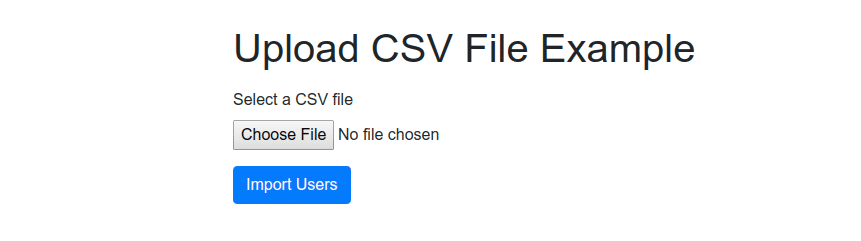
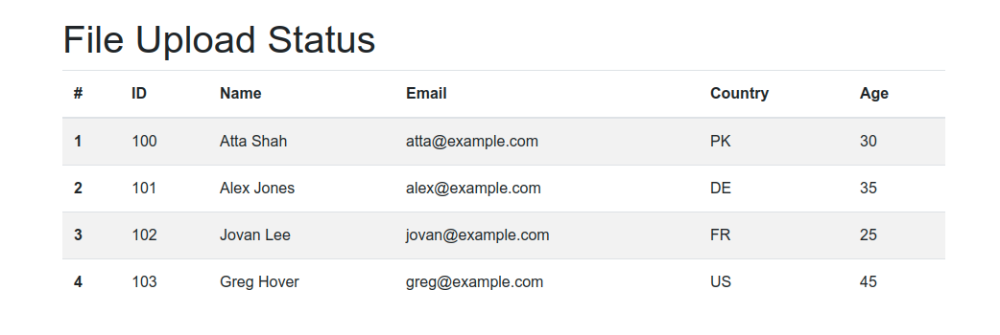
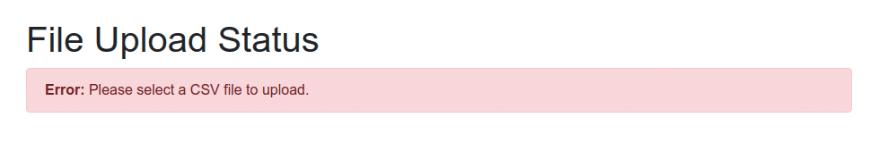

Uploading and Parsing CSV File using Spring Boot
Uploading and Parsing CSV File using Spring Boot
CSV — short for Comma Separated Values — is a popular data exchange format that is frequently used for importing and exporting data between different servers and applications. A CSV file is just a plain-text file that stores data in a tabular format where each row consists of one or more fields and each column represents a specific field. These fields are separated by a delimiter usually a comma or a tab.
In an earlier article, I wrote about exporting and downloading data as a CSV file in Spring Boot. In this article, you'll learn how to upload and parse a CSV file using Spring Boot & Thymeleaf.
Note: To read and parse a CSV file in core Java, check out reading and parsing a CSV file in Java tutorial.
Dependencies
To upload parse a CSV file in Spring Boot, you only need spring-boot-starter-web and opencsv dependencies. Additionally, we also need spring-boot-starter-thymeleaf for serving Thymeleaf templates. The OpenCSV 3rd-party library will be used for parsing the uploaded file.
Add the following dependencies to your Gradle project's build.gradle file:
implementation 'org.springframework.boot:spring-boot-starter-web'
implementation 'org.springframework.boot:spring-boot-starter-thymeleaf'
implementation 'com.opencsv:opencsv:5.0'
For Maven, include the following dependencies to your pom.xml file:
<dependency>
<groupId>org.springframework.boot</groupId>
<artifactId>spring-boot-starter-web</artifactId>
</dependency>
<dependency>
<groupId>org.springframework.boot</groupId>
<artifactId>spring-boot-starter-thymeleaf</artifactId>
</dependency>
<dependency>
<groupId>com.opencsv</groupId>
<artifactId>opencsv</artifactId>
<version>5.0</version>
</dependency>
To create a new Spring Boot project from scratch, you can either use Spring Initializr or Spring Boot CLI to bootstrap a new application with the above-mentioned dependencies.
Model Class
OpenCSV allows us to directly map the CSV record fields to a Java object. Let us create a simple model class named User.java that will be used to populate data from the CSV file:
User.java
public class User {
@CsvBindByName
private long id;
@CsvBindByName
private String name;
@CsvBindByName
private String email;
@CsvBindByName(column = "country")
private String countryCode;
@CsvBindByName
private int age;
public User(long id, String name, String email, String countryCode, int age) {
this.id = id;
this.name = name;
this.email = email;
this.countryCode = countryCode;
this.age = age;
}
}
As you can see above, we have annotated the User class attributes with @CsvBindByName annotation. This annotation is provided by OpenCSV to specify a binding between a column name of the CSV input and a field in a bean.
You can only use the @CsvBindByName annotation if the CSV file has a header. It accepts up to five parameters like column, required, and locale. All parameters are options except column which is also only required if the header column name in the CSV file is different from the bean field name.
Spring Boot Controller
Next, create a Spring Boot controller class named UploadController.java that handles the uploading and parsing of a CSV file:
UploadController.java
@Controller
public class UploadController {
@GetMapping("/")
public String index() {
return "index";
}
@PostMapping("/upload-csv-file")
public String uploadCSVFile(@RequestParam("file") MultipartFile file, Model model) {
if (file.isEmpty()) {
model.addAttribute("message", "Please select a CSV file to upload.");
model.addAttribute("status", false);
} else {
try (Reader reader = new BufferedReader(new InputStreamReader(file.getInputStream()))) {
CsvToBean<User> csvToBean = new CsvToBeanBuilder(reader)
.withType(User.class)
.withIgnoreLeadingWhiteSpace(true)
.build();
List<User> users = csvToBean.parse();
model.addAttribute("users", users);
model.addAttribute("status", true);
} catch (Exception ex) {
model.addAttribute("message", "An error occurred while processing the CSV file.");
model.addAttribute("status", false);
}
}
return "file-upload-status";
}
}
As you can see above, we have annotated the UploadController class with @Controller to indicate that the annotated class is a "Controller" (e.g. a web controller). Each method is decorated with @GetMapping or @PostMapping to bind the path and the HTTP action with that particular method:
- GET
/route simply renders an HTML form to allow the user to upload a CSV file. - POST
/upload-csv-fileroute handles HTTPmultipart/form-datarequests and accepts aMultipartFileobject as a route parameter. This is where we actually parse the uploaded CSV file into a list ofUserobjects by using theCsvToBeanclass. This method returns an HTML response to either display a list of users or an error message.
Thymeleaf Templates
The next step is to create Thymeleaf templates to allow users to upload a CSV file and display results. To nicely display the HTML form, we will use Bootstrap 4 default styles.
HTML Form for File Upload
Here is a simple HTML form that enables users to select a CSV file for upload:
index.html
<form method="POST" th:action="@{/upload-csv-file}" enctype="multipart/form-data">
<div class="form-group mt-3">
<label for="file">Select a CSV file</label>
<input type="file" name="file" class="form-control-file" id="file" accept=".csv">
</div>
<button type="submit" class="btn btn-primary">Import Users</button>
</form>
Display Upload Results
Let us create another Thymeleaf template to display the upload results:
file-upload-status.html
<div class="container py-5">
<div class="row">
<div class="col-10 mx-auto">
<h1>File Upload Status</h1>
<div class="alert alert-danger" role="alert" th:if="${!status}">
<strong>Error:</strong>
<span th:text="${message}"></span>
</div>
<table class="table table-striped" th:if="${status}">
<thead>
<tr>
<th scope="col">#</th>
<th scope="col">ID</th>
<th scope="col">Name</th>
<th scope="col">Email</th>
<th scope="col">Country</th>
<th scope="col">Age</th>
</tr>
</thead>
<tbody>
<tr th:each="user, i : ${users}">
<th scope="row" th:text="${i.index + 1}"></th>
<td th:text="${user.id}"></td>
<td th:text="${user.name}"></td>
<td th:text="${user.email}"></td>
<td th:text="${user.countryCode}"></td>
<td th:text="${user.age}"></td>
</tr>
</tbody>
</table>
</div>
</div>
</div>
Running & Testing the Application
First of all, you need to create the main application class for Spring Boot application as shown below:
@SpringBootApplication
public class Application {
public static void main(String[] args) {
SpringApplication.run(Application.class, args);
}
}
Let's run the application by typing the following command in your terminal from the root directory of the project:
$ ./gradlew bootRun
Once the Spring Boot application is started, open http://localhost:8080 in your favorite web browser to see the upload form. Here is how it looks like:

As shown in the above image, select a CSV file and then click on Import Users button to kickstart file upload operation. If everything goes right, you should see a list of users displayed as shown in the following screenshot:

If you forget to select a CSV file or the CSV file is not valid, you should see the following error message displayed on the screen:

Finally, here is the sample CSV file I just uploaded in the above example:
users.csv
id,name,email,country,age
100,Atta Shah,atta@example.com,PK,30
101,Alex Jones,alex@example.com,DE,35
102,Jovan Lee,jovan@example.com,FR,25
103,Greg Hover,greg@example.com,US,45
Source Code: Download the complete source code from GitHub available under MIT license.
Conclusion
That's all folks! In this article, you have learned how to upload and parse a CSV file using Spring Boot and Thymeleaf web application. We used OpenCSV, a popular open-source library, for parsing the uploaded file into a list of Java objects.
Further Reading
If you like this article, you may be interested in other Spring Boot related articles:
- Export & Download Data as CSV File in Spring Boot
- Uploading Files in Spring Boot
- How to upload a file with Ajax in Spring Boot
- Reading and writing CSV files using OpenCSV
✌️ Like this article? Follow me on Twitter and LinkedIn. You can also subscribe to RSS Feed.